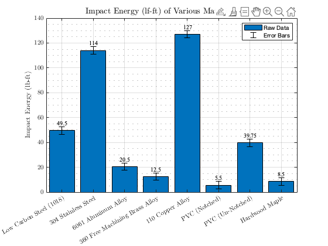

Contents
close all; clear;
Data
impactEnergy = [49.5 114 20.5 12.5 127 5.5 39.75 8.5];
materials = categorical({'Low Carbon Steel (1018)', '304 Stainless Steel', ...
'6061 Aluminum Alloy', '360 Free Machining Brass Alloy', ...
'110 Copper Alloy', 'PVC (Notched)', 'PVC (Un-Notched)', ...
'Hardwood Maple'});
materialsOrdered = reordercats(materials, {'Low Carbon Steel (1018)',...
'304 Stainless Steel', '6061 Aluminum Alloy', '360 Free Machining Brass Alloy', ...
'110 Copper Alloy', 'PVC (Notched)', 'PVC (Un-Notched)', ...
'Hardwood Maple'});
Plot
figure(1)
barGraph = bar(materialsOrdered, impactEnergy);
hold on;
grid on;
grid minor;
xTips = barGraph.XEndPoints;
yTips = barGraph.YEndPoints + 2.75;
labels = string(barGraph.YData);
text(xTips, yTips, labels, 'HorizontalAlignment', 'center', ...
'VerticalAlignment', 'bottom', 'FontName', 'Times');
deltaImpactEnergy = 3;
errorHigh = ones(1, length(impactEnergy)) * deltaImpactEnergy;
errorLow = ones(1, length(impactEnergy)) * -deltaImpactEnergy;
error = errorbar(materialsOrdered, impactEnergy, errorLow, errorHigh);
error.Color = [0 0 0];
error.LineStyle = 'none';
ylabel(' {Impact Energy (lb-ft)}', 'fontsize', 11, 'FontName', 'Times', 'Interpreter', 'latex');
set(gca, 'XTickLabel', materialsOrdered, 'XTick', barGraph.XData, 'FontSize', 11, ...
'TickLabelInterpreter', 'latex');
title('{Impact Energy (lf-ft) of Various Material Types}', 'fontsize', 14, ...
'FontName', 'Times', 'Interpreter', 'latex');
legend('Raw Data', 'Error Bars', 'location','northeast');

Calculations
impactEnergyJ = impactEnergy * 1.35582;
deltaImpactEnergyJ = abs(1.35582) * deltaImpactEnergy;